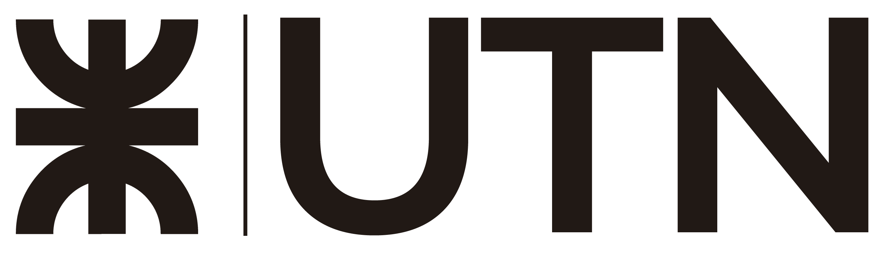

Facundo Nicolas Duran
Estudiante de Ingeniería en Sistemas de Información
RESUMEN
Actualmente estudiante de la carrera de Ingeniería en Sistemas de Información con conocimientos elementales en desarrollo de software, experiencia en creación y edición de sitios web. Aprendizaje constante, disciplina y constancia.
EXPERIENCIA LABORAL

Encargado de laboratorios
Universidad Tecnológica Nacional | Ene 2022 - Act.
- Instalación y mantenimiento de máquinas virtuales.
- Armado, desarmado y limpieza de PCs.
- Soporte técnico al cuerpo docente.
- Tareas administrativas varias.
- Trabajo en equipo con profesionales experimentados.
Desarrollo de sitios web
Freelance | 2018 - 2020
- Configuración de Hosting y Dominio web.
- Instalación y configuración de foros SMF y vBulletin.
- Edición y diseño de webs estáticas con HTML y CSS.